Molecular Cartography - Seurat analysis
Florian Wuennemann
Last updated: 2024-03-21
Checks: 7 0
Knit directory: mi_spatialomics/
This reproducible R Markdown analysis was created with workflowr (version 1.7.1). The Checks tab describes the reproducibility checks that were applied when the results were created. The Past versions tab lists the development history.
Great! Since the R Markdown file has been committed to the Git repository, you know the exact version of the code that produced these results.
Great job! The global environment was empty. Objects defined in the global environment can affect the analysis in your R Markdown file in unknown ways. For reproduciblity it’s best to always run the code in an empty environment.
The command set.seed(20230612) was run prior to running
the code in the R Markdown file. Setting a seed ensures that any results
that rely on randomness, e.g. subsampling or permutations, are
reproducible.
Great job! Recording the operating system, R version, and package versions is critical for reproducibility.
Nice! There were no cached chunks for this analysis, so you can be confident that you successfully produced the results during this run.
Great job! Using relative paths to the files within your workflowr project makes it easier to run your code on other machines.
Great! You are using Git for version control. Tracking code development and connecting the code version to the results is critical for reproducibility.
The results in this page were generated with repository version e6213a5. See the Past versions tab to see a history of the changes made to the R Markdown and HTML files.
Note that you need to be careful to ensure that all relevant files for
the analysis have been committed to Git prior to generating the results
(you can use wflow_publish or
wflow_git_commit). workflowr only checks the R Markdown
file, but you know if there are other scripts or data files that it
depends on. Below is the status of the Git repository when the results
were generated:
Ignored files:
Ignored: .DS_Store
Ignored: .Rproj.user/
Ignored: analysis/.DS_Store
Ignored: analysis/deprecated/.DS_Store
Ignored: analysis/molecular_cartography_python/.DS_Store
Ignored: analysis/seqIF_python/.DS_Store
Ignored: analysis/seqIF_python/pixie/.DS_Store
Ignored: analysis/seqIF_python/pixie/cell_clustering/
Ignored: annotations/.DS_Store
Ignored: annotations/SeqIF/.DS_Store
Ignored: annotations/molkart/.DS_Store
Ignored: annotations/molkart/Figure1_regions/.DS_Store
Ignored: annotations/molkart/Supplementary_Figure4_regions/.DS_Store
Ignored: data/.DS_Store
Ignored: data/140623.calcagno_et_al.seurat_object.rds
Ignored: data/Calcagno2022_int_logNorm_annot.h5Seurat
Ignored: data/IC_03_IF_CCR2_CD68 cell numbers.xlsx
Ignored: data/Traditional_IF_absolute_cell_counts.csv
Ignored: data/Traditional_IF_relative_cell_counts.csv
Ignored: data/pixie.cell_table_size_normalized_cell_labels.csv
Ignored: data/results_cts_100.sqm
Ignored: data/seqIF_regions_annotations/
Ignored: data/seurat/
Ignored: output/.DS_Store
Ignored: output/mol_cart.harmony_object.h5Seurat
Ignored: output/molkart/
Ignored: output/proteomics/
Ignored: output/results_cts.lowres.125.sqm
Ignored: output/seqIF/
Ignored: pipeline_configs/.DS_Store
Ignored: plots/
Ignored: references/.DS_Store
Ignored: renv/.DS_Store
Ignored: renv/library/
Ignored: renv/staging/
Untracked files:
Untracked: analysis/deprecated/figures.supplementary_figureX.Rmd
Untracked: analysis/deprecated/figures.supplementary_figure_X.MistyR.Rmd
Unstaged changes:
Deleted: analysis/figures.supplementary_figureX.Rmd
Deleted: analysis/figures.supplementary_figure_X.MistyR.Rmd
Deleted: analysis/figures.supplementary_figure_X.proteomics_qc.Rmd
Deleted: figures/Figure_5.eps
Deleted: figures/Figure_5.pdf
Deleted: figures/Figure_5.png
Deleted: figures/Figure_5.svg
Deleted: figures/Supplementary_Figure_1_Molecular_Cartography_ROIs.png
Deleted: figures/Supplementary_figure_5.segmentation_metrics.poster.eps
Modified: figures/Supplementary_figure_X.proteomics.eps
Modified: figures/Supplementary_figure_X.proteomics.png
Modified: results_cts.lowres.125.sqm
Note that any generated files, e.g. HTML, png, CSS, etc., are not included in this status report because it is ok for generated content to have uncommitted changes.
These are the previous versions of the repository in which changes were
made to the R Markdown
(analysis/molkart.seurat_analysis.Rmd) and HTML
(docs/molkart.seurat_analysis.html) files. If you’ve
configured a remote Git repository (see ?wflow_git_remote),
click on the hyperlinks in the table below to view the files as they
were in that past version.
| File | Version | Author | Date | Message |
|---|---|---|---|---|
| Rmd | 56559c7 | FloWuenne | 2024-03-21 | Cleaned up repository. |
| Rmd | b06dcd3 | FloWuenne | 2024-02-25 | Updated Figure 1,4 and S4 and 5 code. |
| Rmd | af64c40 | FloWuenne | 2024-01-30 | Updated analysis for Figure 1 and 2. |
| Rmd | 86e53f0 | FloWuenne | 2024-01-22 | Finalized new Figure 1 plots. |
| Rmd | 82f107f | FloWuenne | 2024-01-21 | Updates to Molkart analysis. |
| Rmd | f4d5c82 | FloWuenne | 2024-01-15 | Latest update to Seurat analysis with reprocessed data. |
| Rmd | 2d9b909 | FloWuenne | 2024-01-09 | Pushing latest changes. Updating molkart data. |
| Rmd | 60d835c | FloWuenne | 2023-12-06 | Updated renv packages. |
library(Seurat)Loading required package: SeuratObjectLoading required package: sp'SeuratObject' was built with package 'Matrix' 1.6.3 but the current
version is 1.6.5; it is recomended that you reinstall 'SeuratObject' as
the ABI for 'Matrix' may have changed
Attaching package: 'SeuratObject'The following object is masked from 'package:base':
intersectlibrary(SeuratData)
library(SeuratDisk)Registered S3 method overwritten by 'SeuratDisk':
method from
as.sparse.H5Group Seuratlibrary(data.table)
library(harmony)Loading required package: Rcpplibrary(here)here() starts at /Users/florian_wuennemann/1_Projects/MI_project/mi_spatialomicslibrary(Nebulosa)Loading required package: ggplot2Loading required package: patchworklibrary(tidyverse)── Attaching core tidyverse packages ──────────────────────── tidyverse 2.0.0 ──
✔ dplyr 1.1.4 ✔ readr 2.1.5
✔ forcats 1.0.0 ✔ stringr 1.5.1
✔ lubridate 1.9.3 ✔ tibble 3.2.1
✔ purrr 1.0.2 ✔ tidyr 1.3.0── Conflicts ────────────────────────────────────────── tidyverse_conflicts() ──
✖ dplyr::between() masks data.table::between()
✖ dplyr::filter() masks stats::filter()
✖ dplyr::first() masks data.table::first()
✖ lubridate::hour() masks data.table::hour()
✖ lubridate::isoweek() masks data.table::isoweek()
✖ dplyr::lag() masks stats::lag()
✖ dplyr::last() masks data.table::last()
✖ lubridate::mday() masks data.table::mday()
✖ lubridate::minute() masks data.table::minute()
✖ lubridate::month() masks data.table::month()
✖ lubridate::quarter() masks data.table::quarter()
✖ lubridate::second() masks data.table::second()
✖ purrr::transpose() masks data.table::transpose()
✖ lubridate::wday() masks data.table::wday()
✖ lubridate::week() masks data.table::week()
✖ lubridate::yday() masks data.table::yday()
✖ lubridate::year() masks data.table::year()
ℹ Use the conflicted package (<http://conflicted.r-lib.org/>) to force all conflicts to become errorslibrary(GGally)Registered S3 method overwritten by 'GGally':
method from
+.gg ggplot2library(Matrix)
Attaching package: 'Matrix'
The following objects are masked from 'package:tidyr':
expand, pack, unpacklibrary(sf)Linking to GEOS 3.11.0, GDAL 3.5.3, PROJ 9.1.0; sf_use_s2() is TRUElibrary(sfheaders)
library(viridis)Loading required package: viridisLitesource("./code/functions.R")
Attaching package: 'cowplot'
The following object is masked from 'package:lubridate':
stamp
The following object is masked from 'package:patchwork':
align_plotsIntroduction
In this analysis, we will process the single-cell quantification from nf-Molkart. These tables are basically the output from the regionprops command from scikit and contain properties from the segmentation masks, as well as the count of RNA molecules per gene. We will parse these tables to extract the transcript counts, put these in the expression matrix slots from Seurat and extract the metadata for samples and segmentation masks and put these into the metadata slot of Seurat objects.
Read data
Process mcquant tables to seurat object
First, we read the samples, create Seurat objects for them and then merge the Seurat objects.
Merging seurat objects
final_samples <- c("sample_control_r1_s1","sample_control_r2_s1",
"sample_4h_r1_s1","sample_4h_r2_s2",
"sample_2d_r1_s1","sample_2d_r2_s1",
"sample_4d_r1_s1","sample_4d_r2_s1")
seurat_objects <- list()
norm_list <- list()
## SCTransform based clustering across all samples
sample_dir <- "../data/nf-core_molkart/spot2cell"
seurat_list <- list()
segmethod_samples <- list.files(sample_dir)
for(sample in segmethod_samples){
sample_ID <- strsplit(sample,"\\.")[[1]][1]
sample_ID <- strsplit(sample_ID,split="_")[[1]][-1]
sample_ID <- paste(sample_ID[1:length(sample_ID) -1],collapse = "_")
if(endsWith(sample,"_cellpose.csv") & sample_ID %in% final_samples){
print(sample_ID)
sample_quant <- fread(paste(sample_dir,sample,sep="/"))
seurat_object <- create_seurat_sctransform_mcquant(sample_quant,sample_ID)
# norm_list[[sample_ID]] <- seurat_object@assays$RNA@layers$counts / seurat_object@meta.data$Area
seurat_list[[sample_ID]] <- seurat_object
}
}[1] "sample_2d_r1_s1"Warning: Data is of class matrix. Coercing to dgCMatrix.[1] "sample_2d_r2_s1"Warning: Data is of class matrix. Coercing to dgCMatrix.[1] "sample_4d_r1_s1"Warning: Data is of class matrix. Coercing to dgCMatrix.[1] "sample_4d_r2_s1"Warning: Data is of class matrix. Coercing to dgCMatrix.[1] "sample_4h_r1_s1"Warning: Data is of class matrix. Coercing to dgCMatrix.[1] "sample_4h_r2_s2"Warning: Data is of class matrix. Coercing to dgCMatrix.[1] "sample_control_r1_s1"Warning: Data is of class matrix. Coercing to dgCMatrix.[1] "sample_control_r2_s1"Warning: Data is of class matrix. Coercing to dgCMatrix.resolve_object <- merge(seurat_list[[1]], y = c(seurat_list[-1]),
project = "molkart_MI", merge.data = TRUE)
resolve_object <- JoinLayers(resolve_object)Process data
Now, we will filter cells based on some general quality control parameters like a minimum number of RNA molecules detected and also remove some weirdly shaped cell masks.
Plot distribution of transcript counts and mask properties
## Set order of timepoints
resolve_object@meta.data$timepoint <- factor(resolve_object@meta.data$timepoint,
levels = c("control","4h","2d","4d"))
## Show distribution of QC measures before filtering outliers
VlnPlot(resolve_object, features = c("nCount_RNA","nFeature_RNA","Area","Eccentricity","Solidity"),
group.by = "timepoint", pt.size = 0, cols = time_palette)Warning: Default search for "data" layer in "RNA" assay yielded no results;
utilizing "counts" layer instead.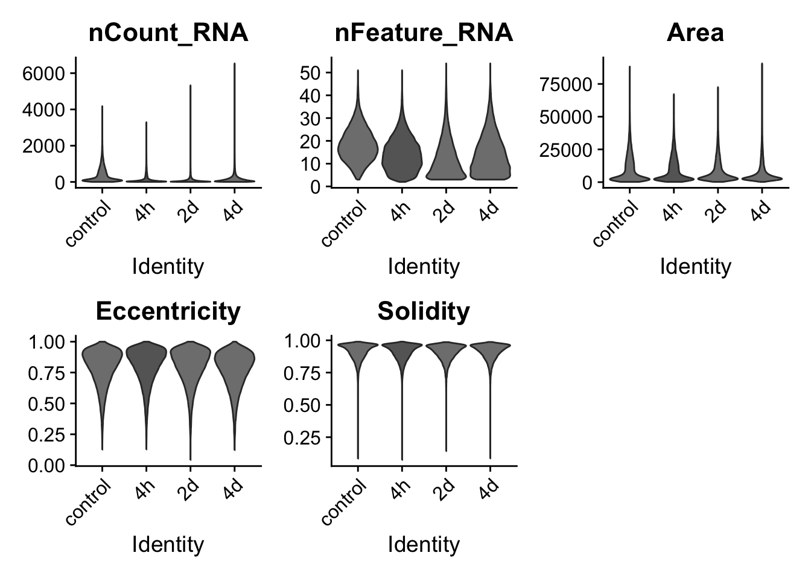
prefiltered_cells <- nrow(resolve_object@meta.data)
print(paste(prefiltered_cells,"cells before filtering"))[1] "83606 cells before filtering"Filter outlier cells
## Before filtering cells, let's see if there are any specific outliers
meta_props <- resolve_object@meta.data %>%
select(Area,MajorAxisLength,MinorAxisLength,Eccentricity,Solidity,Extent,nCount_RNA,timepoint)
ggpairs(meta_props,
mapping = aes(color = timepoint),
columns = c("Area", "Solidity", "Extent","nCount_RNA"))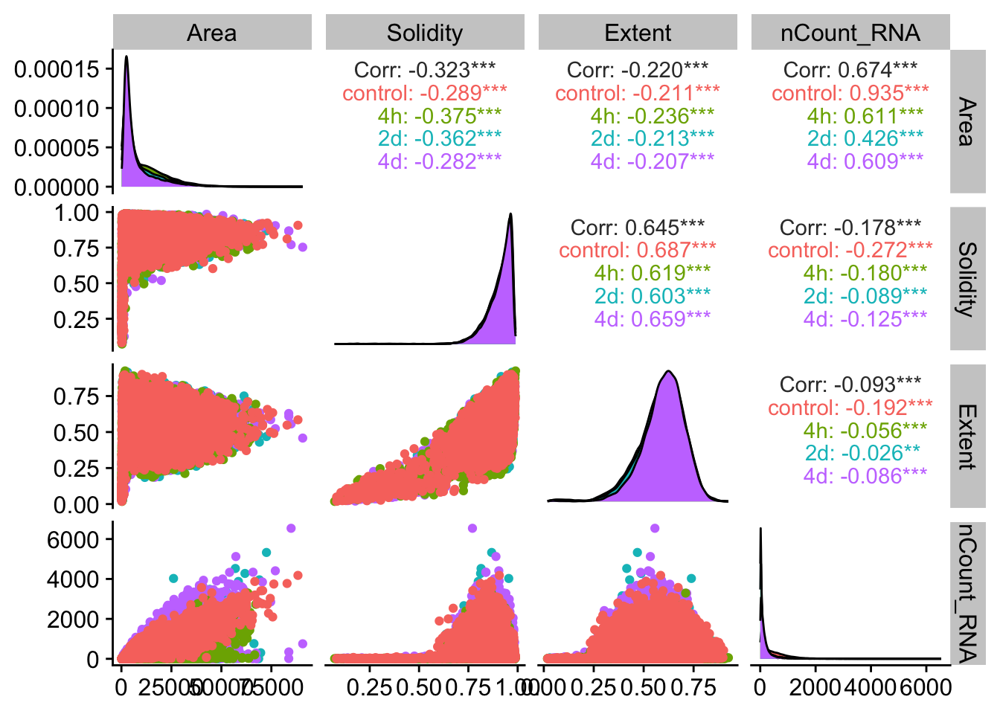
resolve_object <- subset(resolve_object,
subset =
nCount_RNA <= 4000 &
nCount_RNA >= 20 &
Extent > 0.25 &
Solidity > 0.75)
## How many cells are left after filtering?
post_filter_cells <- nrow(resolve_object@meta.data)## Let's check the same correlations after filtering
meta_props <- resolve_object@meta.data %>%
select(Area,MajorAxisLength,MinorAxisLength,Eccentricity,Solidity,Extent,nCount_RNA,timepoint)
ggpairs(meta_props,
mapping = aes(color = timepoint),
columns = c("Area", "Solidity", "Extent","nCount_RNA"))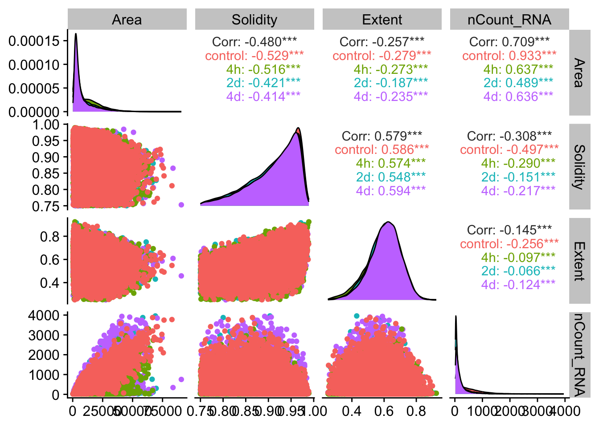
## Show distribution of QC measures after filtering outliers
VlnPlot(resolve_object, features = c("nCount_RNA","nFeature_RNA","Area","Eccentricity","Solidity"),
group.by = "timepoint", pt.size = 0, cols = time_palette)Warning: Default search for "data" layer in "RNA" assay yielded no results;
utilizing "counts" layer instead.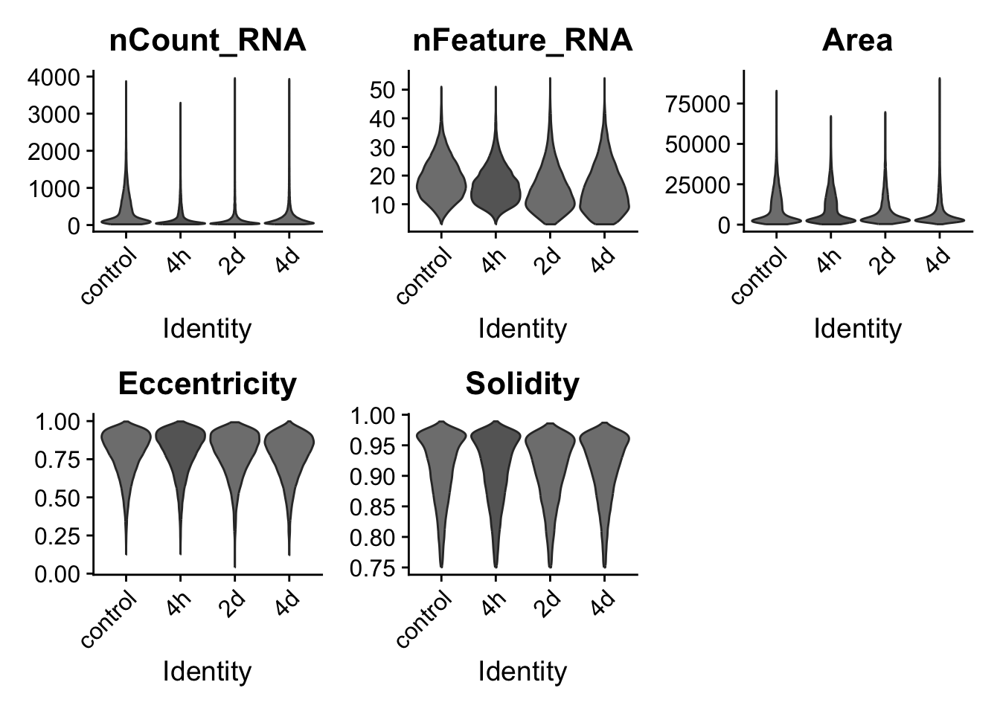
Integrate samples using SCTransform and Harmony
Now we will integrate the different samples using the harmony method within Seurat.
resolve_object[["RNA"]] <- split(resolve_object[["RNA"]], f = resolve_object$timepoint)## Normalize and scale data using sctransform v2
resolve_object <- SCTransform(resolve_object,
assay = "RNA")Running SCTransform on assay: RNARunning SCTransform on layer: counts.2dvst.flavor='v2' set. Using model with fixed slope and excluding poisson genes.Variance stabilizing transformation of count matrix of size 93 by 9183Model formula is y ~ log_umiGet Negative Binomial regression parameters per geneUsing 93 genes, 5000 cellsSecond step: Get residuals using fitted parameters for 93 genesComputing corrected count matrix for 93 genesCalculating gene attributesWall clock passed: Time difference of 0.8328509 secsDetermine variable featuresCentering data matrixGetting residuals for block 1(of 2) for 2d datasetGetting residuals for block 2(of 2) for 2d datasetCentering data matrixFinished calculating residuals for 2dRunning SCTransform on layer: counts.4dvst.flavor='v2' set. Using model with fixed slope and excluding poisson genes.Variance stabilizing transformation of count matrix of size 99 by 19015Model formula is y ~ log_umiGet Negative Binomial regression parameters per geneUsing 94 genes, 5000 cellsSecond step: Get residuals using fitted parameters for 99 genesComputing corrected count matrix for 99 genesCalculating gene attributesWall clock passed: Time difference of 0.985574 secsDetermine variable featuresCentering data matrixGetting residuals for block 1(of 4) for 4d datasetGetting residuals for block 2(of 4) for 4d datasetGetting residuals for block 3(of 4) for 4d datasetGetting residuals for block 4(of 4) for 4d datasetCentering data matrixFinished calculating residuals for 4dRunning SCTransform on layer: counts.4hvst.flavor='v2' set. Using model with fixed slope and excluding poisson genes.Variance stabilizing transformation of count matrix of size 95 by 20155Model formula is y ~ log_umiGet Negative Binomial regression parameters per geneUsing 94 genes, 5000 cellsSecond step: Get residuals using fitted parameters for 95 genesComputing corrected count matrix for 95 genesCalculating gene attributesWall clock passed: Time difference of 0.6392071 secsDetermine variable featuresCentering data matrixGetting residuals for block 1(of 5) for 4h datasetGetting residuals for block 2(of 5) for 4h datasetGetting residuals for block 3(of 5) for 4h datasetGetting residuals for block 4(of 5) for 4h datasetGetting residuals for block 5(of 5) for 4h datasetCentering data matrixFinished calculating residuals for 4hRunning SCTransform on layer: counts.controlvst.flavor='v2' set. Using model with fixed slope and excluding poisson genes.Variance stabilizing transformation of count matrix of size 93 by 20675Model formula is y ~ log_umiGet Negative Binomial regression parameters per geneUsing 89 genes, 5000 cellsFound 2 outliers - those will be ignored in fitting/regularization stepSecond step: Get residuals using fitted parameters for 93 genesComputing corrected count matrix for 93 genesCalculating gene attributesWall clock passed: Time difference of 0.636632 secsDetermine variable featuresCentering data matrixGetting residuals for block 1(of 5) for control datasetGetting residuals for block 2(of 5) for control datasetGetting residuals for block 3(of 5) for control datasetGetting residuals for block 4(of 5) for control datasetGetting residuals for block 5(of 5) for control datasetCentering data matrixFinished calculating residuals for controlSet default assay to SCT# Perform PCA
npcs_to_use <- 30
resolve_object <- RunPCA(resolve_object, npcs = npcs_to_use, verbose = FALSE, approx=FALSE)
ElbowPlot(resolve_object, ndims = npcs_to_use)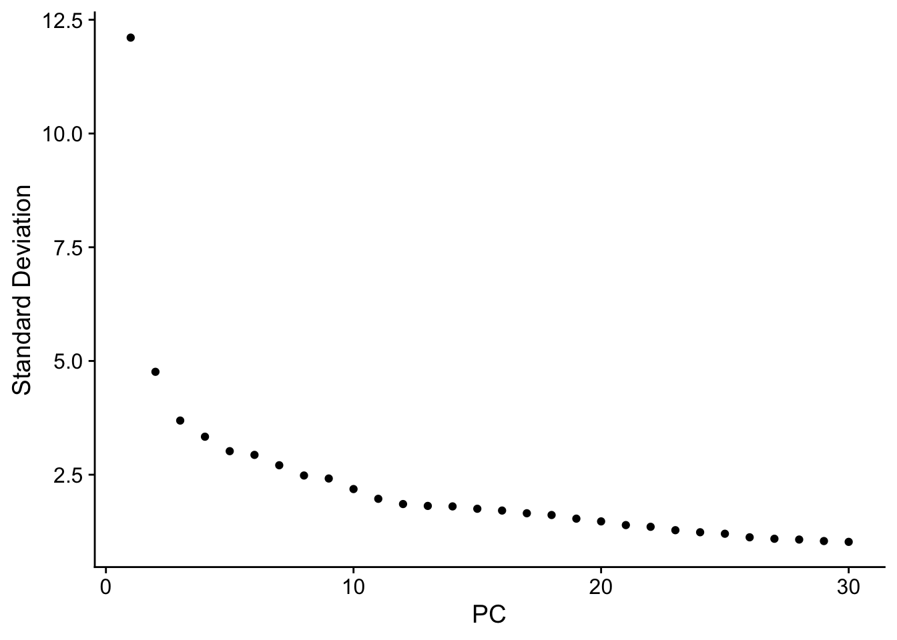
harmony_object <- IntegrateLayers(
object = resolve_object, method = HarmonyIntegration,
orig.reduction = "pca", new.reduction = "harmony",
assay = "SCT", verbose = FALSE
)Warning: HarmonyMatrix is deprecated and will be removed in the future from the
API in the futureWarning: Warning: The parameters do_pca and npcs are deprecated. They will be ignored for this function call and please remove parameters do_pca and npcs and pass to harmony cell_embeddings directly.
This warning is displayed once per session.Warning: Warning: The parameter tau is deprecated. It will be ignored for this function call and please remove parameter tau in future function calls. Advanced users can set value of parameter tau by using parameter .options and function harmony_options().
This warning is displayed once per session.Warning: Warning: The parameter block.size is deprecated. It will be ignored for this function call and please remove parameter block.size in future function calls. Advanced users can set value of parameter block.size by using parameter .options and function harmony_options().
This warning is displayed once per session.Warning: Warning: The parameter max.iter.harmony is replaced with parameter max_iter. It will be ignored for this function call and please use parameter max_iter in future function calls.
This warning is displayed once per session.Warning: Warning: The parameter max.iter.cluster is deprecated. It will be ignored for this function call and please remove parameter max.iter.cluster in future function calls. Advanced users can set value of parameter max.iter.cluster by using parameter .options and function harmony_options().
This warning is displayed once per session.Warning: Warning: The parameter epsilon.cluster is deprecated. It will be ignored for this function call and please remove parameter epsilon.cluster in future function calls. Advanced users can set value of parameter epsilon.cluster by using parameter .options and function harmony_options().
This warning is displayed once per session.Warning: Warning: The parameter epsilon.harmony is deprecated. It will be ignored for this function call and please remove parameter epsilon.harmony in future function calls. If users want to control if harmony would stop early or not, use parameter early_stop. Advanced users can set value of parameter epsilon.harmony by using parameter .options and function harmony_options().
This warning is displayed once per session.Warning: Quick-TRANSfer stage steps exceeded maximum (= 3451400)harmony_object <- FindNeighbors(harmony_object, reduction = "harmony", dims = 1:npcs_to_use)Computing nearest neighbor graphComputing SNNharmony_object <- FindClusters(harmony_object, resolution = 0.4, cluster.name = "harmony_clusters")Modularity Optimizer version 1.3.0 by Ludo Waltman and Nees Jan van Eck
Number of nodes: 69028
Number of edges: 2495751
Running Louvain algorithm...
Maximum modularity in 10 random starts: 0.9460
Number of communities: 24
Elapsed time: 15 secondsharmony_object <- RunUMAP(harmony_object, reduction = "harmony", dims = 1:npcs_to_use, reduction.name = "umap")Warning: The default method for RunUMAP has changed from calling Python UMAP via reticulate to the R-native UWOT using the cosine metric
To use Python UMAP via reticulate, set umap.method to 'umap-learn' and metric to 'correlation'
This message will be shown once per session21:19:09 UMAP embedding parameters a = 0.9922 b = 1.112Found more than one class "dist" in cache; using the first, from namespace 'spam'Also defined by 'BiocGenerics'21:19:09 Read 69028 rows and found 30 numeric columns21:19:09 Using Annoy for neighbor search, n_neighbors = 30Found more than one class "dist" in cache; using the first, from namespace 'spam'Also defined by 'BiocGenerics'21:19:09 Building Annoy index with metric = cosine, n_trees = 500% 10 20 30 40 50 60 70 80 90 100%[----|----|----|----|----|----|----|----|----|----|**************************************************|
21:19:16 Writing NN index file to temp file /var/folders/ph/m6mhj3s541799cykzbp3dx0m0000gn/T//RtmpgOWfRi/file1304382ad87d
21:19:17 Searching Annoy index using 1 thread, search_k = 3000
21:19:36 Annoy recall = 98.6%
21:19:36 Commencing smooth kNN distance calibration using 1 thread with target n_neighbors = 30
21:19:37 Initializing from normalized Laplacian + noise (using RSpectra)
21:19:39 Commencing optimization for 200 epochs, with 3233778 positive edges
21:20:04 Optimization finishedp1 <- plot_density(harmony_object, features= c("Npr3"), size = 0.5)
p2 <- DimPlot(harmony_object, reduction = "umap", label = TRUE, repel = TRUE,raster=FALSE)
p1+p2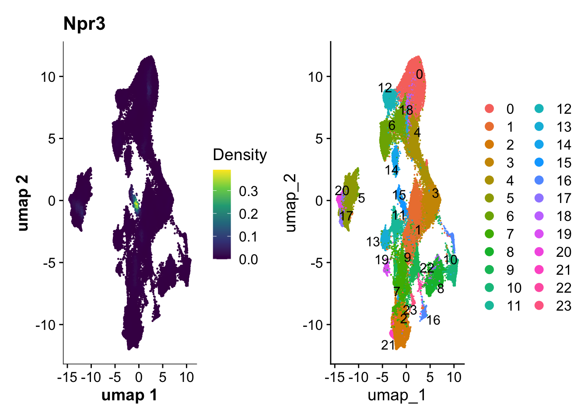
Plot Harmony integration results
## Plot UMAP with cells labeled by sampled time point and by cluster assigned using nearest-neighbor analysis
p1 <- DimPlot(harmony_object, reduction = "umap", group.by = "timepoint",raster=FALSE,
cols = time_palette, alpha = 0.5)
p2 <- DimPlot(harmony_object, reduction = "umap", label = TRUE, repel = TRUE,raster=FALSE)
p1+p2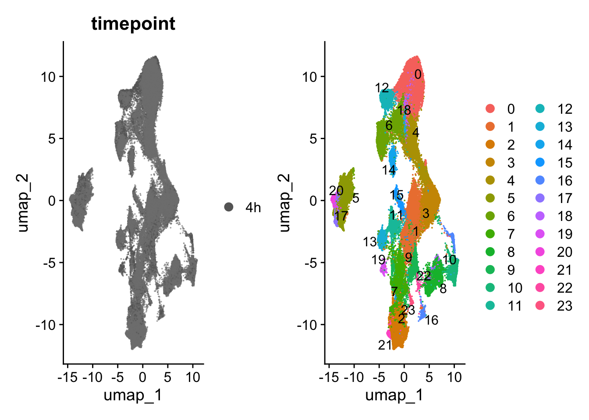
## Plot UMAP next to a barplot
meta_time <- harmony_object@meta.data %>%
group_by(seurat_clusters, timepoint) %>%
tally() %>%
mutate("frac" = n / sum(n))
time_bar <- ggplot(meta_time,aes(seurat_clusters,frac, fill = timepoint)) +
geom_bar(stat = "identity", position = "stack") +
coord_flip() +
scale_fill_manual(values = time_palette)
combined_time_plot <- p2 + time_bar &
theme(plot.background = element_rect(fill = 'white'),
panel.background = element_rect(fill = 'white'))
save_plot(combined_time_plot,
file = "./plots/molkart.umap_time.png",
base_height = 10)## Plot Nebulosa plots for QC measures to highlight cell clusters with high number of transcripts
plot_density(harmony_object, features= c("Area","nCount_RNA","Solidity","Extent"))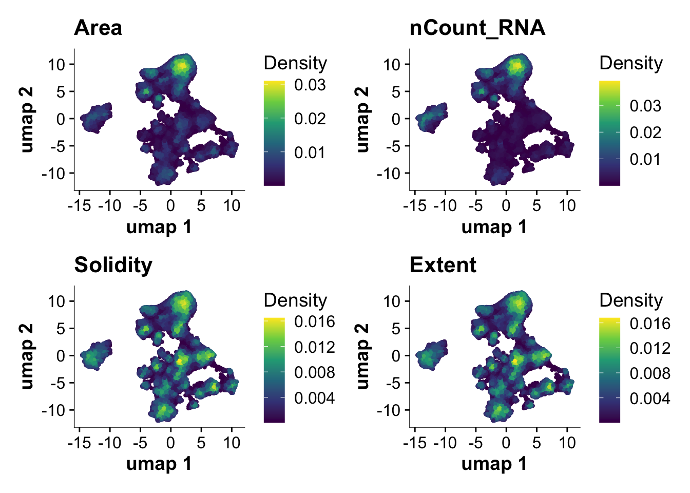
## Plot the number of cells per cluster and color by cluster ID
cell_numbers <- harmony_object@meta.data %>%
group_by(seurat_clusters) %>%
tally()
ggplot(cell_numbers,aes(seurat_clusters,n)) +
geom_bar(stat = "identity",aes(fill = seurat_clusters)) +
theme(legend.position = "None")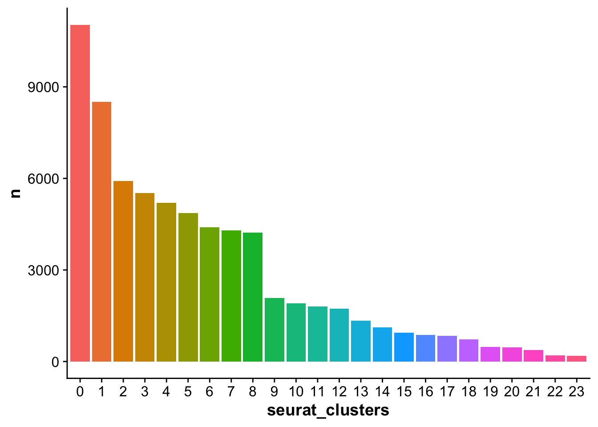
Identify marker genes for cell clusters
harmony_object <- PrepSCTFindMarkers(harmony_object, assay = "SCT", verbose = TRUE)Found 4 SCT models. Recorrecting SCT counts using minimum median counts: 78harmony_markers <- FindAllMarkers(harmony_object, logfc.threshold = 0.5, only.pos = TRUE)Calculating cluster 0Calculating cluster 1Calculating cluster 2Calculating cluster 3Calculating cluster 4Calculating cluster 5Calculating cluster 6Calculating cluster 7Calculating cluster 8Calculating cluster 9Calculating cluster 10Calculating cluster 11Calculating cluster 12Calculating cluster 13Calculating cluster 14Calculating cluster 15Calculating cluster 16Calculating cluster 17Calculating cluster 18Calculating cluster 19Calculating cluster 20Calculating cluster 21Calculating cluster 22Calculating cluster 23## Write marker table to file
write.table(harmony_markers,
file = "./output/molkart/molkart.cell_type_markers.csv",
sep = ",",
row.names = TRUE,
col.names = TRUE,
quote = FALSE)Transfer labels from snRNA-seq (Calcagno et al. 2020)
To get some labels for cell types from a publicly available dataset, we will transfer labels from an snRNA-seq dataset generated by Calcagno et al. 2020 in Nature cardiovascular research.
calcagno_et_al <- LoadH5Seurat("../public_data/Calcagno_et_al_NatCardioVasc_2022/reprocessed_data/Calcagno2022_int_logNorm_annot.h5Seurat")Validating h5Seurat fileInitializing RNA with dataAdding counts for RNAAdding miscellaneous information for RNAInitializing integrated with dataAdding scale.data for integratedAdding variable feature information for integratedAdding miscellaneous information for integratedAdding reduction pcaAdding cell embeddings for pcaAdding feature loadings for pcaAdding miscellaneous information for pcaAdding reduction umapAdding cell embeddings for umapAdding miscellaneous information for umapAdding graph integrated_nnAdding graph integrated_snnAdding command informationAdding cell-level metadataAdding miscellaneous informationAdding tool-specific resultsAdding data that was not associated with an assayWarning: Adding a command log without an assay associated with itcalcagno_et_al <- SCTransform(calcagno_et_al, assay = "RNA")Running SCTransform on assay: RNAvst.flavor='v2' set. Using model with fixed slope and excluding poisson genes.Calculating cell attributes from input UMI matrix: log_umiVariance stabilizing transformation of count matrix of size 20024 by 64108Model formula is y ~ log_umiGet Negative Binomial regression parameters per geneUsing 2000 genes, 5000 cellsFound 213 outliers - those will be ignored in fitting/regularization stepSecond step: Get residuals using fitted parameters for 20024 genesComputing corrected count matrix for 20024 genesCalculating gene attributesWall clock passed: Time difference of 3.495663 minsDetermine variable featuresCentering data matrixPlace corrected count matrix in counts slotSet default assay to SCTanchors <- FindTransferAnchors(reference = calcagno_et_al, query = harmony_object, normalization.method = "SCT", npcs = 50, recompute.residuals = FALSE)Performing PCA on the provided reference using 65 features as input.Warning in irlba(A = t(x = object), nv = npcs, ...): You're computing too large
a percentage of total singular values, use a standard svd instead.Projecting cell embeddingsFinding neighborhoodsFinding anchors Found 26749 anchorspredictions.assay_lvl1 <- TransferData(anchorset = anchors, refdata = calcagno_et_al$level_1, prediction.assay = FALSE, weight.reduction = "pcaproject", dims = NULL)Finding integration vectorsFinding integration vector weightsPredicting cell labelspredictions.assay_lvl2 <- TransferData(anchorset = anchors, refdata = calcagno_et_al$level_2, prediction.assay = FALSE, weight.reduction = "pcaproject", dims = NULL)Finding integration vectorsFinding integration vector weightsPredicting cell labelspredictions.assay_lvl3 <- TransferData(anchorset = anchors, refdata = calcagno_et_al$level_3, prediction.assay = FALSE, weight.reduction = "pcaproject", dims = NULL)Finding integration vectorsFinding integration vector weightsPredicting cell labelspredictions.orig_label <- TransferData(anchorset = anchors, refdata = calcagno_et_al$orig_label, prediction.assay = FALSE, weight.reduction = "pcaproject", dims = NULL)Finding integration vectorsFinding integration vector weightsPredicting cell labels## Add labels to Harmony object and plot Umap
harmony_object@meta.data$predicted_ct_lvl1 <- predictions.assay_lvl1$predicted.id
harmony_object@meta.data$predicted_ct_lvl2 <- predictions.assay_lvl2$predicted.id
harmony_object@meta.data$predicted_ct_lvl3 <- predictions.assay_lvl3$predicted.id
harmony_object@meta.data$orig_label_calcagno <- predictions.orig_label$predicted.idcalcagno_lvl1 <- DimPlot(harmony_object, reduction = "umap", group.by = "predicted_ct_lvl1",raster=FALSE, label = TRUE)
calcagno_lvl2 <- DimPlot(harmony_object, reduction = "umap", group.by = "predicted_ct_lvl2",raster=FALSE, label = TRUE)
calcagno_lvl3 <- DimPlot(harmony_object, reduction = "umap", group.by = "predicted_ct_lvl3",raster=FALSE, label = TRUE)
DimPlot(harmony_object, reduction = "umap", group.by = "orig_label_calcagno",raster=FALSE, label = TRUE)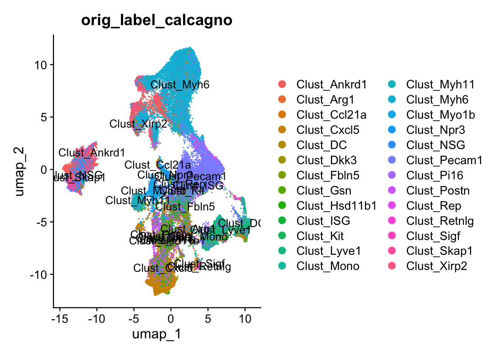
calcagno_lvl1 | calcagno_lvl2 | calcagno_lvl3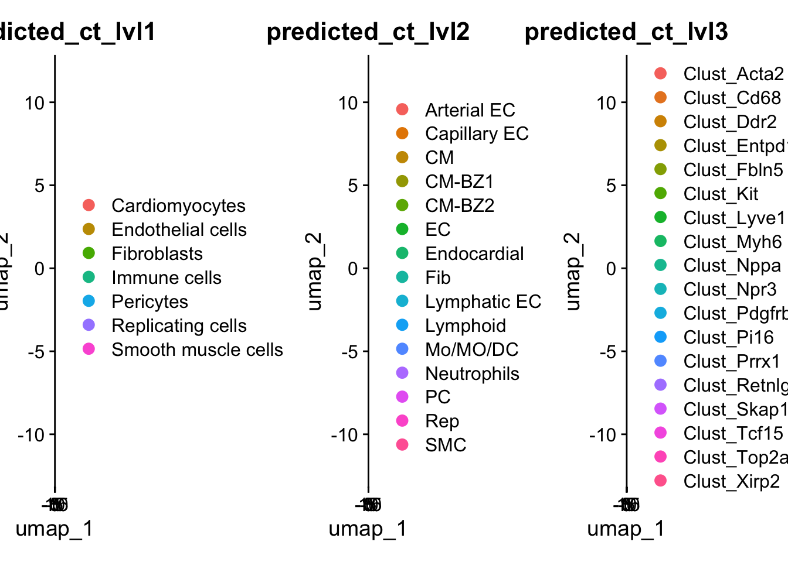
Use manual tissue annotation to improve endocardial cell labeling
Endocardial cells are very small and thin and form a monolayer at the inner lining of the heart. We noticed that our RNA marker Npr3 does not always reliably label endocardial cells and therefore will use manual annotation of the endocardial tissue regions to improve annotation of endocardial cells.
## Function to use GeoJson mask from QuPath with Seurat metadata to check cell overlap to manual annotation region
check_mask_overlap <- function(polygon_sf,metadata,img_height,anno_name){
points_sf <- st_as_sf(metadata, coords = c("X_centroid", "Y_centroid"), crs = NA)
polygon_sf <- st_set_crs(polygon_sf, NA)
mirrored_geometries <- st_geometry(polygon_sf) %>%
st_coordinates() %>%
as.data.frame() %>%
mutate("Y" = img_height - Y) %>%
select(X,Y,L2)
mirrored_geometries <- as.data.frame(mirrored_geometries)
polygon_list <- split(mirrored_geometries[,c("X", "Y")], mirrored_geometries$L2)
closed_polys <- list()
# Iterate over polygons in polygon_list and add the first row to the end of each polygon
for (i in 1:length(polygon_list)) {
closed_polys[[i]] <- as.matrix(rbind(polygon_list[[i]], polygon_list[[i]][1,]))
}
# Convert the list of polygons to sf objects
sf_objects <- lapply(closed_polys, function(polygon) {
st_polygon(list(polygon))
})
# Create a MULTIPOLYGON object
multipolygon <- st_multipolygon(sf_objects)
## Check which points fall withing the annotation
points_within_polygons <- st_within(points_sf, multipolygon, sparse = FALSE)
metadata[anno_name] <- points_within_polygons
return(metadata)
}## Check which cells fall in the spatial endocardial region for each sample
all_vals <- list()
for(sample_id in unique(harmony_object@meta.data$sample_ID)){
print(sample_id)
image_sizes <- fread("./references/molkart.image_dimensions.csv")
img_height <- subset(image_sizes,sample_ID == sample_id)$height
polygon_sf <- st_read(paste("./annotations/molkart/heart_regions_r/",sample_id,".stack.geojson",sep=""))
sample_meta <- subset(harmony_object@meta.data,sample_ID == sample_id)
sample_vals <- list(polygon_sf,sample_meta,img_height)
all_vals <- append(all_vals,list(sample_vals))
#
}[1] "sample_2d_r1_s1"
Reading layer `sample_2d_r1_s1.stack' from data source
`/Users/florian_wuennemann/1_Projects/MI_project/mi_spatialomics/annotations/molkart/heart_regions_r/sample_2d_r1_s1.stack.geojson'
using driver `GeoJSON'
Simple feature collection with 1 feature and 3 fields
Geometry type: POLYGON
Dimension: XY
Bounding box: xmin: 8566 ymin: 690 xmax: 13860 ymax: 9747
Geodetic CRS: WGS 84
[1] "sample_2d_r2_s1"
Reading layer `sample_2d_r2_s1.stack' from data source
`/Users/florian_wuennemann/1_Projects/MI_project/mi_spatialomics/annotations/molkart/heart_regions_r/sample_2d_r2_s1.stack.geojson'
using driver `GeoJSON'
Simple feature collection with 3 features and 4 fields
Geometry type: POLYGON
Dimension: XY
Bounding box: xmin: 3793 ymin: 8044 xmax: 10720 ymax: 20387
Geodetic CRS: WGS 84
[1] "sample_4d_r1_s1"
Reading layer `sample_4d_r1_s1.stack' from data source
`/Users/florian_wuennemann/1_Projects/MI_project/mi_spatialomics/annotations/molkart/heart_regions_r/sample_4d_r1_s1.stack.geojson'
using driver `GeoJSON'
Simple feature collection with 2 features and 4 fields
Geometry type: POLYGON
Dimension: XY
Bounding box: xmin: 5539 ymin: 1844 xmax: 10738 ymax: 12420
Geodetic CRS: WGS 84
[1] "sample_4d_r2_s1"
Reading layer `sample_4d_r2_s1.stack' from data source
`/Users/florian_wuennemann/1_Projects/MI_project/mi_spatialomics/annotations/molkart/heart_regions_r/sample_4d_r2_s1.stack.geojson'
using driver `GeoJSON'
Simple feature collection with 3 features and 3 fields
Geometry type: POLYGON
Dimension: XY
Bounding box: xmin: 0 ymin: 236 xmax: 17963 ymax: 6159
Geodetic CRS: WGS 84
[1] "sample_4h_r1_s1"
Reading layer `sample_4h_r1_s1.stack' from data source
`/Users/florian_wuennemann/1_Projects/MI_project/mi_spatialomics/annotations/molkart/heart_regions_r/sample_4h_r1_s1.stack.geojson'
using driver `GeoJSON'
Simple feature collection with 3 features and 3 fields
Geometry type: POLYGON
Dimension: XY
Bounding box: xmin: 2237 ymin: 5280 xmax: 15604 ymax: 17152
Geodetic CRS: WGS 84
[1] "sample_4h_r2_s2"
Reading layer `sample_4h_r2_s2.stack' from data source
`/Users/florian_wuennemann/1_Projects/MI_project/mi_spatialomics/annotations/molkart/heart_regions_r/sample_4h_r2_s2.stack.geojson'
using driver `GeoJSON'
Simple feature collection with 1 feature and 2 fields
Geometry type: POLYGON
Dimension: XY
Bounding box: xmin: 6475 ymin: 3304 xmax: 18740 ymax: 15008
Geodetic CRS: WGS 84
[1] "sample_control_r1_s1"
Reading layer `sample_control_r1_s1.stack' from data source
`/Users/florian_wuennemann/1_Projects/MI_project/mi_spatialomics/annotations/molkart/heart_regions_r/sample_control_r1_s1.stack.geojson'
using driver `GeoJSON'
Simple feature collection with 1 feature and 3 fields
Geometry type: POLYGON
Dimension: XY
Bounding box: xmin: 3748 ymin: 12539 xmax: 10117 ymax: 14892
Geodetic CRS: WGS 84
[1] "sample_control_r2_s1"
Reading layer `sample_control_r2_s1.stack' from data source
`/Users/florian_wuennemann/1_Projects/MI_project/mi_spatialomics/annotations/molkart/heart_regions_r/sample_control_r2_s1.stack.geojson'
using driver `GeoJSON'
Simple feature collection with 3 features and 3 fields
Geometry type: POLYGON
Dimension: XY
Bounding box: xmin: 0 ymin: 2591 xmax: 6300 ymax: 7736
Geodetic CRS: WGS 84#test <- check_mask_overlap(polygon_sf,sample_meta,img_height)
meta_list <- Map(function(x) check_mask_overlap(x[[1]], x[[2]], x[[3]],"in_endo"), all_vals)
# Combine all data frames into one
new_full_meta <- do.call(rbind, meta_list)## Which seurat cluster corresponds to endocardial cells (Npr3 positive)?
endocardial_cluster <- 15
## How many cells are in the endocardial cluster?
n_endo <- nrow(subset(new_full_meta,seurat_clusters == endocardial_cluster))
## How many of the transcriptionally defined endocardial cell cluster are spatially within the endocardium?
n_endo_spatial <- nrow(subset(new_full_meta,seurat_clusters == endocardial_cluster & in_endo == TRUE))
## How many segmented cells are total in the annotated regions?
anno_region_cells <- nrow(subset(new_full_meta, in_endo == TRUE))
## Let's classify cells that are Pecam1 positive within the endocardial region as endocardial (even if they are not Npr3 positive)
## add Pecam1 expression
pecam1_exp <- harmony_object@assays$SCT@data["Pecam1",]
new_full_meta$Pecam1 <- pecam1_exp
npr3_exp <- harmony_object@assays$SCT@data["Npr3",]
new_full_meta$Npr3 <- npr3_exp
## How many cells are Pecam1 positive within the endocardial region?
pecam1_pos <- subset(new_full_meta,Pecam1 > 0 & in_endo == TRUE)
## Add another annotation column to metadata to classify all cells with Pecam1 > 0 within the endocardial region as endocardial cells
new_full_meta <- new_full_meta %>%
mutate("spatial_endoc" = if_else((in_endo == TRUE & Pecam1 > 2) | (in_endo == TRUE & seurat_clusters == endocardial_cluster), TRUE,FALSE))
harmony_object@meta.data <- new_full_metaPlot results of spatial annotation for endocardial cells
## Plot cells that are transcriptionally labeled as endocardial cells
ggplot(new_full_meta,aes(X_centroid,Y_centroid)) +
geom_point(color = "darkgrey") +
geom_point(data = subset(new_full_meta,seurat_clusters == endocardial_cluster),color = "red") +
facet_wrap(~ sample_ID)
## Plot
## 1: blue - originally transcriptionally labeled endocardial cells but not in endocardial region.
## 2: red - transcriptionally labeled endocardial cells that were in endocardial region
## 3: purple - Cells that were not clustered with Npr3 positive cells but spatially fall within endocardium and are Pecam1 or Npr3 positive.
ggplot(new_full_meta,aes(X_centroid,Y_centroid)) +
geom_point(color = "darkgrey", size = 0.5) +
geom_point(data = subset(new_full_meta,spatial_endoc == TRUE & seurat_clusters == endocardial_cluster),color = "red", size = 0.75) +
geom_point(data = subset(new_full_meta,spatial_endoc == TRUE & seurat_clusters != endocardial_cluster),color = "purple", size = 0.75) +
geom_point(data = subset(new_full_meta,spatial_endoc == FALSE & seurat_clusters == endocardial_cluster),color = "blue", size = 0.75) +
facet_wrap(~ sample_ID)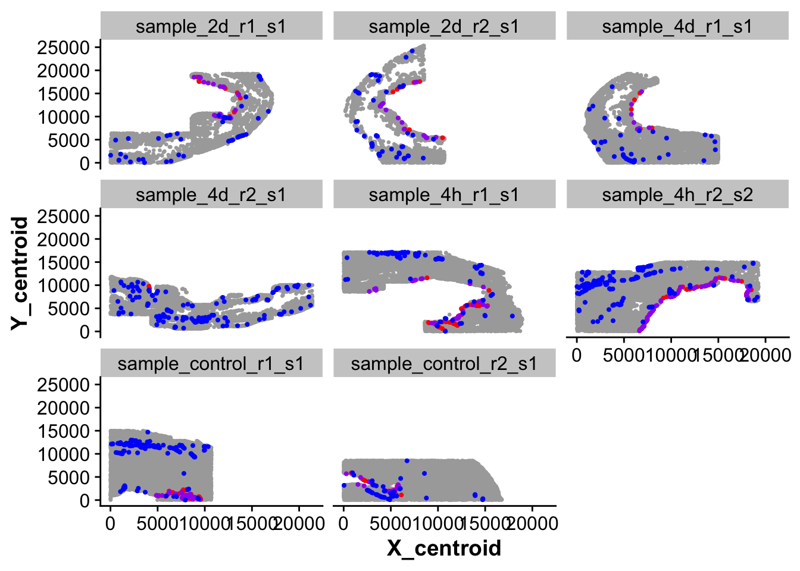
## Plot all cells that were considered "in endocardial region"
ggplot(new_full_meta,aes(X_centroid,Y_centroid)) +
geom_point(color = "darkgrey") +
geom_point(data = subset(new_full_meta,spatial_endoc == TRUE )) +
facet_wrap(~ sample_ID)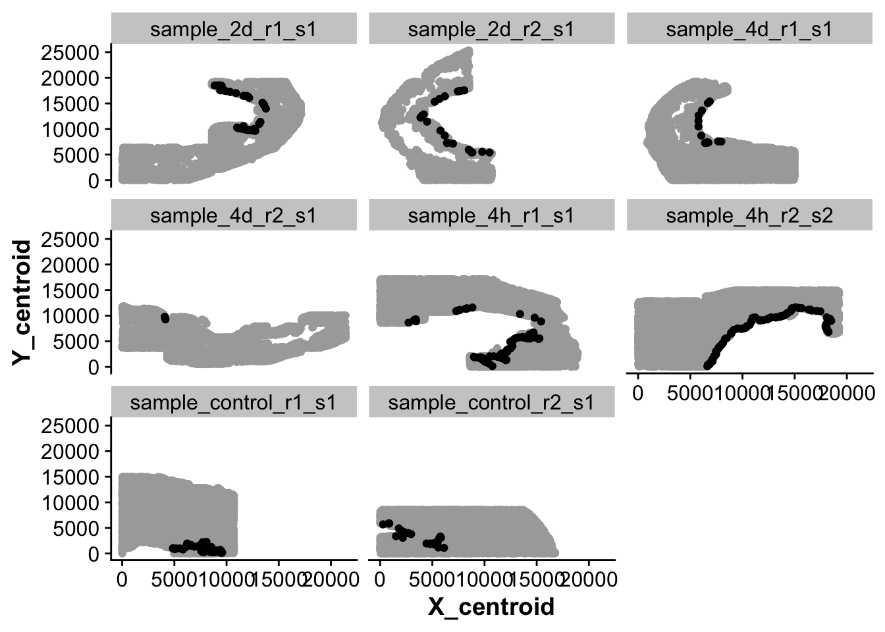
Assign cell-type names to clusters
Level 1 annotation - Higher cell types
## Annotate main cell-types and states
## LVL1
seurat_clusters <- harmony_object@active.ident
## Cluster level 1
new.cluster.ids <- c("Cardiomyocytes", #0
"Endothelial_cells", #1
"Cardiac_fibroblasts", #2
"Endothelial_cells", #3
"Cardiomyocytes", #4
"Cardiomyocytes", #5
"Cardiomyocytes", #6
"Cardiac_fibroblasts", #7
"Immune_cells", #8
"Immune_cells", #9
"Immune_cells", #10
"Pericytes" , #11
"Cardiomyocytes", #12
"Smooth_muscle_cells", #13
"Cardiomyocytes", #14
"Endothelial_cells", #15
"Immune_cells", #16
"Cardiomyocytes",#17
"Cardiomyocytes", #18 Glia_cells
"Immune_cells", #19
"Cardiomyocytes", #20
"Cardiac_fibroblasts", #21
"Immune_cells", #22
"Cardiac_fibroblasts" #23
)
names(new.cluster.ids) <- levels(harmony_object)
harmony_object <- RenameIdents(harmony_object, new.cluster.ids)
harmony_object@meta.data$anno_cell_type_lvl1 <- harmony_object@active.ident
## Reset cluster to seurat ID
Idents(object = harmony_object) <- "seurat_clusters"DimPlot(harmony_object, reduction = "umap", label = TRUE, repel = TRUE,raster=FALSE, group.by = "anno_cell_type_lvl1")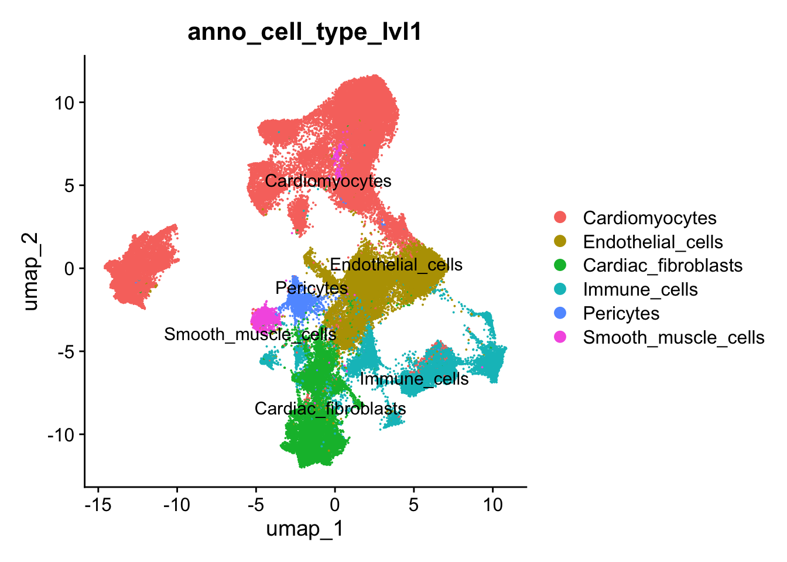
Level 2 annotation - Sub-Cell & cell states
## Annotate cell clusters with more detaile
## Lvl2
seurat_clusters <- harmony_object@active.ident
## Cluster level 2
new.cluster.ids <- c("Cardiomyocytes", #0
"Endothelial_cells", #1
"Cardiac_fibroblasts", #2
"Endothelial_cells", #3
"Cardiomyocytes", #4
"Cardiomyocytes_Nppa+", #5 Macrophages
"Cardiomyocytes", #6
"Cardiac_fibroblasts", #7
"Myeloid_cells", #8
"Myeloid_cells", #9
"Myeloid_cells", #10 Dendritic cells
"Pericytes" , #11
"Cardiomyocytes", #12
"Smooth_muscle_cells", #13
"Cardiomyocytes", #14
"Endocardial_cells", #15
"Myeloid_cells", #16
"Cardiomyocytes_Nppa+",#17
"Cardiomyocytes", #18
"Myeloid_cells", #19
"Cardiomyocytes_Nppa+", #20
"Cardiac_fibroblasts", #21
"Myeloid_cells", #22
"Cardiac_fibroblasts" #23
)
names(new.cluster.ids) <- levels(harmony_object)
harmony_object <- RenameIdents(harmony_object, new.cluster.ids)
harmony_object@meta.data$anno_cell_type_lvl2 <- harmony_object@active.ident
## Reset cluster to seurat ID
Idents(object = harmony_object) <- "seurat_clusters"DimPlot(harmony_object, reduction = "umap", label = TRUE, repel = TRUE,raster=FALSE, group.by = "anno_cell_type_lvl2")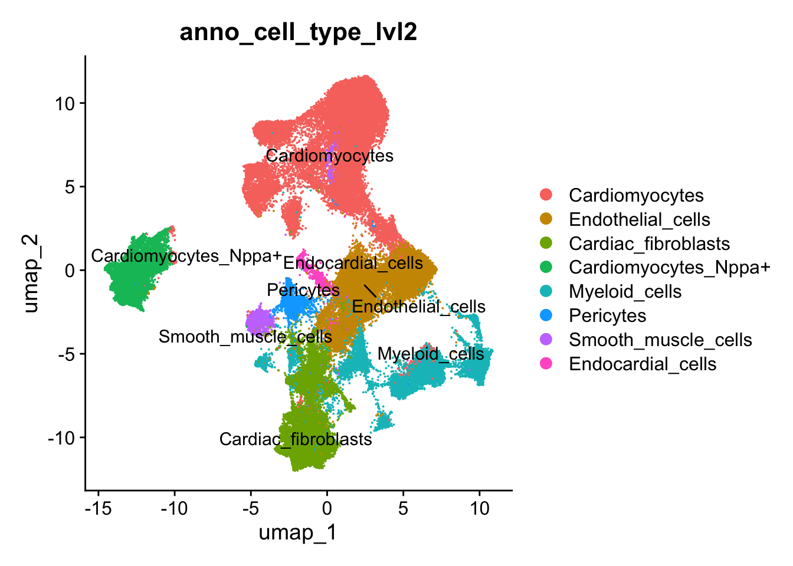
Level 3 annotation - Cell states with marker names
## Annotate cell clusters with more detailed cell states
## Lvl3
seurat_clusters <- harmony_object@active.ident
## Cluster level 3
new.cluster.ids <- c("Cardiomyocytes_Pln", #0
"Endothelial_cells_Kdr", #1
"Cardiac_fibroblasts_Col1a1", #2
"Endothelial_cells_Aqp1", #3
"Cardiomyocytes_Pln", #4
"Cardiomyocytes_Nppa+", #5 Macrophages
"Cardiomyocytes_Cxcr6", #6
"Cardiac_fibroblasts_Dcn", #7
"Mono/Macros_C1qa", #8
"Mono/Macros_Arg1+", #9
"DC_Cd74", #10 Dendritic cells
"Pericytes_Colec11" , #11
"Cardiomyocytes_Nppb+", #12
"Smooth_muscle_cells_Myh11", #13
"Cardiomyocytes_Vegfa", #14
"Endocardial_cells_Npr3", #15
"Neutrophils_Csf3r", #16
"Cardiomyocytes_Nppa+",#17
"Cardiomyocytes_Pln", #18
"Mono/Macros_Ccl2", #19
"Cardiomyocytes_Nppa+", #20
"Cardiac_fibroblasts_Col1a1", #21
"Mono/Macros_C1qa", #22
"Cardiac_fibroblasts_Msln" #23
)
names(new.cluster.ids) <- levels(harmony_object)
harmony_object <- RenameIdents(harmony_object, new.cluster.ids)
harmony_object@meta.data$anno_cell_type_lvl3 <- harmony_object@active.ident
## Reset cluster to seurat ID
Idents(object = harmony_object) <- "seurat_clusters"DimPlot(harmony_object, reduction = "umap", label = TRUE, repel = TRUE,raster=FALSE, group.by = "anno_cell_type_lvl3")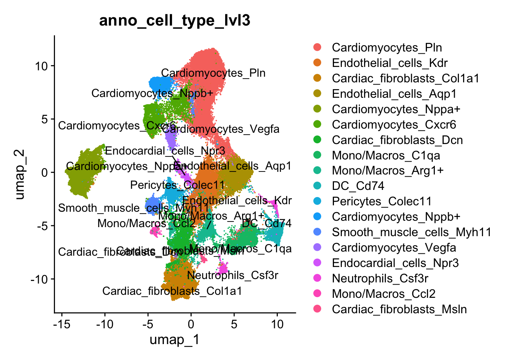
Refine cell type cluster based on spatial annotation and marker expression
## Using the clustering settings we did, there is a subgroup of cells that are lymphoid but clustered with cells in cluster 16. We will put these cells in a separate cluster based on their marker expression
new_full_meta <- harmony_object@meta.data
emb <- harmony_object@reductions$umap@cell.embeddings
lymph_emb <- subset(as.data.frame(emb),umap_1 > 8.5 & umap_2 > -5)
new_full_meta <- new_full_meta %>%
mutate("lymphoid" = if_else(rownames(new_full_meta) %in% rownames(lymph_emb) & seurat_clusters == 16, TRUE,FALSE))
harmony_object@meta.data <- new_full_meta
harmony_object@meta.data <- harmony_object@meta.data %>%
mutate("anno_cell_type_lvl2" = if_else(lymphoid == TRUE, "Lymphoid_cells",anno_cell_type_lvl2),
"anno_cell_type_lvl3" = if_else(lymphoid == TRUE, "Lymphoid_cells_Cd3e",anno_cell_type_lvl3)
)## Endocardial cells
## First, let's reclassify endocardial cells based on the Qupath annotation we did above
harmony_object@meta.data <- harmony_object@meta.data %>%
mutate("anno_cell_type_lvl2" = if_else(spatial_endoc == TRUE & anno_cell_type_lvl2 == "Endocardial_cells","Endocardial_cells",
if_else(spatial_endoc == TRUE & anno_cell_type_lvl2 != "Endocardial_cells","Endocardial_cells",
if_else(spatial_endoc == FALSE & anno_cell_type_lvl2 == "Endocardial_cells","Endothelial_cells",anno_cell_type_lvl2))),
"anno_cell_type_lvl3" = if_else(spatial_endoc == TRUE & anno_cell_type_lvl3 == "Endocardial_cells_Npr3","Endocardial_cells_Npr3",
if_else(spatial_endoc == TRUE & anno_cell_type_lvl3 != "Endocardial_cells_Npr3","Endocardial_cells_Npr3",
if_else(spatial_endoc == FALSE & anno_cell_type_lvl3 == "Endocardial_cells_Npr3","Lymphatic_endothelial_cells_Lyve1",anno_cell_type_lvl3))))
# ## Add cells located within endocardium to annotations
# harmony_object@meta.data <- harmony_object@meta.data %>%
# mutate("anno_cell_type_lvl2" = if_else(spatial_endoc == TRUE | anno_cell_type_lvl2 == "Endocardial_cells","Endocardial_cells",anno_cell_type_lvl2),
# "anno_cell_type_lvl3" = if_else(spatial_endoc == TRUE | anno_cell_type_lvl3 == "Endocardial_cells_Npr3","Endocardial_cells_Npr3",anno_cell_type_lvl3))new_full_meta <- harmony_object@meta.data
## Plot cells that are
ggplot(new_full_meta,aes(X_centroid,Y_centroid)) +
geom_point(color = "darkgrey") +
geom_point(data = subset(new_full_meta,anno_cell_type_lvl2 == "Endocardial_cells"),color = "red") +
geom_point(data = subset(new_full_meta,grepl("Myeloid_cells",anno_cell_type_lvl2)),color = "blue") +
facet_wrap(~ sample_ID)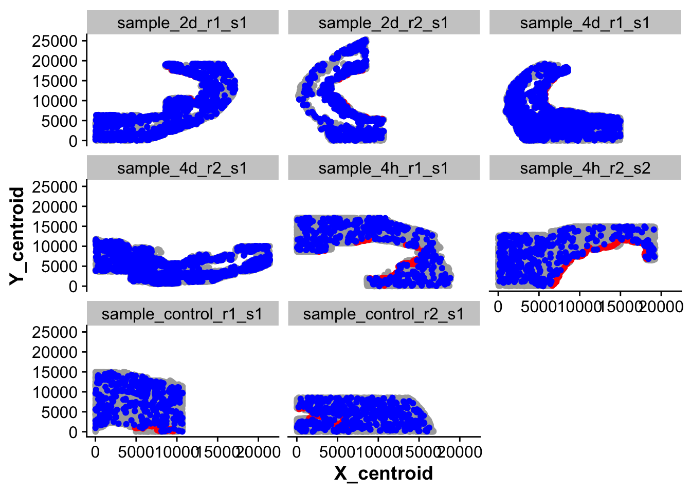
p1 <- DimPlot(harmony_object, reduction = "umap", group.by = "anno_cell_type_lvl1",raster=FALSE,
alpha = 0.5, label = TRUE, repel = TRUE) + NoLegend()
p2 <- DimPlot(harmony_object, reduction = "umap", group.by = "anno_cell_type_lvl2",raster=FALSE,
alpha = 0.5, label = TRUE, repel = TRUE) + NoLegend()
p3 <- DimPlot(harmony_object, reduction = "umap", group.by = "anno_cell_type_lvl3",raster=FALSE,
alpha = 0.5, label = TRUE, repel = TRUE) + NoLegend()
p1 + p2 + p3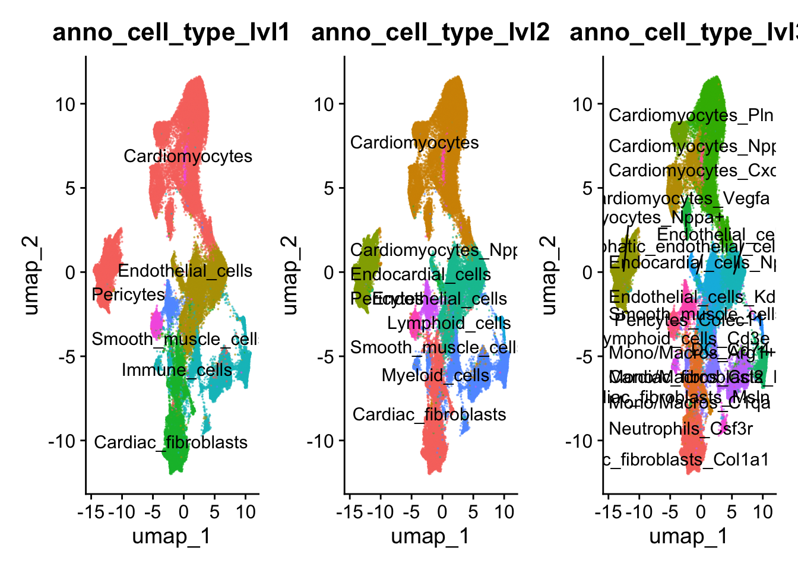
Identify and plot best “marker” genes
Idents(object = harmony_object) <- "anno_cell_type_lvl2"
harmony_object <- PrepSCTFindMarkers(harmony_object, assay = "SCT", verbose = TRUE)Found 4 SCT models. Recorrecting SCT counts using minimum median counts: 78harmony_markers <- FindAllMarkers(harmony_object, logfc.threshold = 0.5, only.pos = TRUE)Calculating cluster Myeloid_cellsCalculating cluster Cardiac_fibroblastsCalculating cluster PericytesCalculating cluster Endothelial_cellsCalculating cluster CardiomyocytesCalculating cluster Smooth_muscle_cellsCalculating cluster Cardiomyocytes_Nppa+Calculating cluster Endocardial_cellsCalculating cluster Lymphoid_cells## Set order of cell types
levels(harmony_object) <- rev(sort(levels(harmony_object)))
library(viridis)
genes <- c("Csf3r","Npr3","Ccl2","Lyz2","H2-Eb1",
"Pdgfrb","Nppa","Nppb","C1qa","Postn","Aqp1","Mybpc3")
DotPlot(harmony_object, group.by = "anno_cell_type_lvl2",
features = genes) +
geom_point(aes(size=pct.exp), shape = 21, colour="black", stroke=0.75) +
scale_colour_viridis(option="magma", direction = 1)Warning: The following variables were found in both object meta data and the default assay: Npr3
Returning meta data; if you want the feature, please use the assay's key (eg. sct_Npr3)Scale for colour is already present.
Adding another scale for colour, which will replace the existing scale.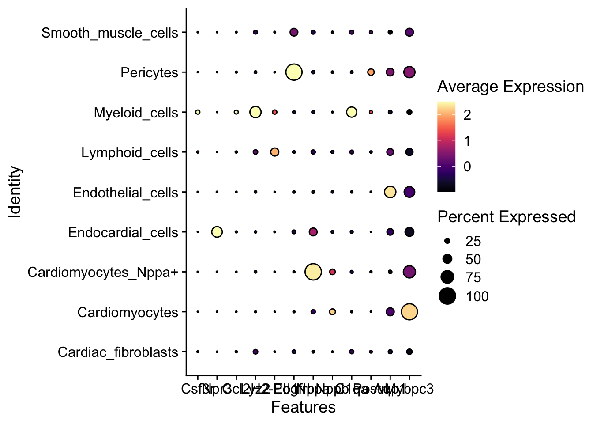
Save object as seurat RDS
saveRDS(harmony_object,
file = "./output/molkart/molkart.seurat_object.rds")# ## If the object has already been computed we can load it
# harmony_object <- readRDS(file
# = "./output/molkart/molkart.seurat_object.rds")Save data formatted for input to spatial anndata object
metadata <- harmony_object@meta.data %>%
mutate("liana_cts" = if_else(grepl("Myeloid_cells",anno_cell_type_lvl2),"Myeloid_cells",anno_cell_type_lvl2))
coordinates <- metadata %>% select(X_centroid,Y_centroid)
counts <- t(as.matrix(harmony_object@assays$SCT@counts))
## Save coordinates
write.table(coordinates,
"./output/molkart/harmony_object.coordinates_anndata.tsv",
sep="\t",
col.names = FALSE,
row.names = FALSE,
quote = FALSE)
## Save counts
write.table(counts,
"./output/molkart/harmony_object.counts_anndata.tsv",
sep="\t",
col.names = TRUE,
row.names = FALSE,
quote = FALSE)
## Annotation
write.table(metadata,
"./output/molkart/harmony_object.metadata_anndata.tsv",
sep="\t",
col.names = TRUE,
row.names = FALSE,
quote = FALSE)Generate Misty input
misty_in <- harmony_object@meta.data %>%
dplyr::select(sample_ID,timepoint,replicate,X_centroid,Y_centroid,Area,anno_cell_type_lvl1,anno_cell_type_lvl2,anno_cell_type_lvl3,nCount_RNA)
misty_in$cell_ID <- rownames(misty_in)expression_plot_list <- list()
# final_samples <- c("sample_control_r1_s1","sample_control_r2_s1",
# "sample_4h_r1_s1","sample_4h_r2_s2",
# "sample_2d_r1_s1","sample_2d_r2_s1",
# "sample_4d_r1_s1","sample_4d_r2_s1")
samples <- c("sample_control_r1_s1","sample_4h_r1_s1",
"sample_2d_r1_s1","sample_4d_r1_s1",
"sample_control_r2_s1","sample_4h_r2_s2",
"sample_2d_r2_s1","sample_4d_r2_s1")
for(this_sample in samples){
pt_size <- 0.2
cluster_of_int <- c(16,19)
sample_object <- subset(misty_in,sample_ID == this_sample)
highlight_plot <- ggplot(sample_object,aes(X_centroid,Y_centroid)) +
geom_point(aes(color = anno_cell_type_lvl2),size = pt_size) +
theme_classic() +
labs(x = "Spatial 1",
y = "Spatial 2",
title = this_sample) +
theme(axis.ticks = element_blank(),
axis.text = element_blank(),
legend.position = "right") +
scale_color_brewer(palette = "Set3")
expression_plot_list[[this_sample]] <- highlight_plot
}
wrap_plots(expression_plot_list, nrow = 2, ncol = 4) + plot_layout(guides = 'collect')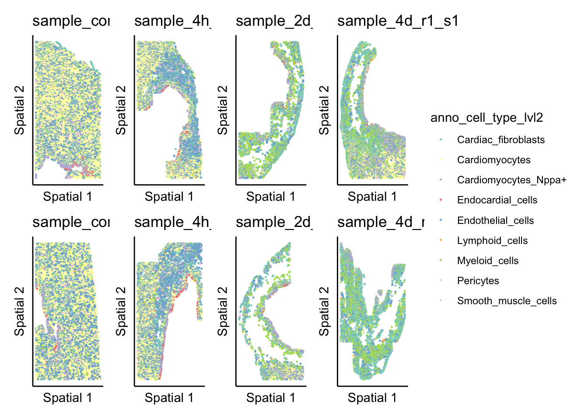
misty_in_lowres <- misty_in %>%
mutate("misty_cts" = anno_cell_type_lvl2)
write.table(misty_in_lowres,
file = "./output/molkart/molkart.misty_celltype_table.lowres.tsv",
sep="\t",
col.names = TRUE,
row.names = FALSE,
quote = FALSE)
misty_in_highres <- misty_in %>%
mutate("misty_cts" = anno_cell_type_lvl3)
write.table(misty_in_highres,
file = "./output/molkart/molkart.misty_celltype_table.highres.tsv",
sep="\t",
col.names = TRUE,
row.names = FALSE,
quote = FALSE)
sessionInfo()R version 4.3.1 (2023-06-16)
Platform: aarch64-apple-darwin20 (64-bit)
Running under: macOS Sonoma 14.1.2
Matrix products: default
BLAS: /Library/Frameworks/R.framework/Versions/4.3-arm64/Resources/lib/libRblas.0.dylib
LAPACK: /Library/Frameworks/R.framework/Versions/4.3-arm64/Resources/lib/libRlapack.dylib; LAPACK version 3.11.0
locale:
[1] en_US.UTF-8/en_US.UTF-8/en_US.UTF-8/C/en_US.UTF-8/en_US.UTF-8
time zone: Europe/Berlin
tzcode source: internal
attached base packages:
[1] stats graphics grDevices datasets utils methods base
other attached packages:
[1] RColorBrewer_1.1-3 ggsci_3.0.0 cowplot_1.1.2
[4] viridis_0.6.4 viridisLite_0.4.2 sfheaders_0.4.4
[7] sf_1.0-15 Matrix_1.6-5 GGally_2.2.0
[10] lubridate_1.9.3 forcats_1.0.0 stringr_1.5.1
[13] dplyr_1.1.4 purrr_1.0.2 readr_2.1.5
[16] tidyr_1.3.0 tibble_3.2.1 tidyverse_2.0.0
[19] Nebulosa_1.12.0 patchwork_1.2.0 ggplot2_3.4.4
[22] here_1.0.1 harmony_1.2.0 Rcpp_1.0.12
[25] data.table_1.14.10 SeuratDisk_0.0.0.9021 SeuratData_0.2.2.9001
[28] Seurat_5.0.1 SeuratObject_5.0.1 sp_2.1-2
[31] workflowr_1.7.1
loaded via a namespace (and not attached):
[1] fs_1.6.3 matrixStats_1.2.0
[3] spatstat.sparse_3.0-3 bitops_1.0-7
[5] httr_1.4.7 tools_4.3.1
[7] sctransform_0.4.1 utf8_1.2.4
[9] R6_2.5.1 lazyeval_0.2.2
[11] uwot_0.1.16 withr_2.5.2
[13] gridExtra_2.3 progressr_0.14.0
[15] textshaping_0.3.7 cli_3.6.2
[17] Biobase_2.62.0 spatstat.explore_3.2-5
[19] fastDummies_1.7.3 labeling_0.4.3
[21] sass_0.4.8 mvtnorm_1.2-4
[23] spatstat.data_3.0-3 proxy_0.4-27
[25] ggridges_0.5.5 pbapply_1.7-2
[27] systemfonts_1.0.5 parallelly_1.36.0
[29] limma_3.58.1 rstudioapi_0.15.0
[31] generics_0.1.3 ica_1.0-3
[33] spatstat.random_3.2-2 ggbeeswarm_0.7.2
[35] fansi_1.0.6 S4Vectors_0.40.2
[37] abind_1.4-5 lifecycle_1.0.4
[39] whisker_0.4.1 yaml_2.3.8
[41] SummarizedExperiment_1.32.0 SparseArray_1.2.3
[43] Rtsne_0.17 glmGamPoi_1.14.0
[45] grid_4.3.1 promises_1.2.1
[47] crayon_1.5.2 miniUI_0.1.1.1
[49] lattice_0.22-5 pillar_1.9.0
[51] knitr_1.45 GenomicRanges_1.54.1
[53] future.apply_1.11.1 codetools_0.2-19
[55] leiden_0.4.3.1 glue_1.7.0
[57] getPass_0.2-4 vctrs_0.6.5
[59] png_0.1-8 spam_2.10-0
[61] gtable_0.3.4 cachem_1.0.8
[63] ks_1.14.2 xfun_0.41
[65] S4Arrays_1.2.0 mime_0.12
[67] pracma_2.4.4 survival_3.5-7
[69] SingleCellExperiment_1.24.0 units_0.8-5
[71] statmod_1.5.0 ellipsis_0.3.2
[73] fitdistrplus_1.1-11 ROCR_1.0-11
[75] nlme_3.1-164 bit64_4.0.5
[77] RcppAnnoy_0.0.21 GenomeInfoDb_1.38.5
[79] rprojroot_2.0.4 bslib_0.6.1
[81] irlba_2.3.5.1 vipor_0.4.7
[83] KernSmooth_2.23-22 colorspace_2.1-0
[85] BiocGenerics_0.48.1 DBI_1.2.0
[87] ggrastr_1.0.2 tidyselect_1.2.0
[89] processx_3.8.3 bit_4.0.5
[91] compiler_4.3.1 git2r_0.33.0
[93] hdf5r_1.3.8 DelayedArray_0.28.0
[95] plotly_4.10.4 scales_1.3.0
[97] classInt_0.4-10 lmtest_0.9-40
[99] callr_3.7.3 rappdirs_0.3.3
[101] digest_0.6.34 goftest_1.2-3
[103] presto_1.0.0 spatstat.utils_3.0-4
[105] rmarkdown_2.25 XVector_0.42.0
[107] RhpcBLASctl_0.23-42 htmltools_0.5.7
[109] pkgconfig_2.0.3 sparseMatrixStats_1.14.0
[111] MatrixGenerics_1.14.0 highr_0.10
[113] fastmap_1.1.1 rlang_1.1.3
[115] htmlwidgets_1.6.4 shiny_1.8.0
[117] DelayedMatrixStats_1.24.0 farver_2.1.1
[119] jquerylib_0.1.4 zoo_1.8-12
[121] jsonlite_1.8.8 mclust_6.0.1
[123] RCurl_1.98-1.14 magrittr_2.0.3
[125] GenomeInfoDbData_1.2.11 dotCall64_1.1-1
[127] munsell_0.5.0 reticulate_1.34.0
[129] stringi_1.8.3 zlibbioc_1.48.0
[131] MASS_7.3-60.0.1 plyr_1.8.9
[133] ggstats_0.5.1 parallel_4.3.1
[135] listenv_0.9.0 ggrepel_0.9.5
[137] deldir_2.0-2 splines_4.3.1
[139] tensor_1.5 hms_1.1.3
[141] ps_1.7.6 igraph_1.6.0
[143] spatstat.geom_3.2-7 RcppHNSW_0.5.0
[145] reshape2_1.4.4 stats4_4.3.1
[147] evaluate_0.23 renv_1.0.3
[149] BiocManager_1.30.22 tzdb_0.4.0
[151] httpuv_1.6.14 RANN_2.6.1
[153] polyclip_1.10-6 future_1.33.1
[155] scattermore_1.2 xtable_1.8-4
[157] e1071_1.7-14 RSpectra_0.16-1
[159] later_1.3.2 class_7.3-22
[161] ragg_1.2.7 beeswarm_0.4.0
[163] IRanges_2.36.0 cluster_2.1.6
[165] timechange_0.2.0 globals_0.16.2